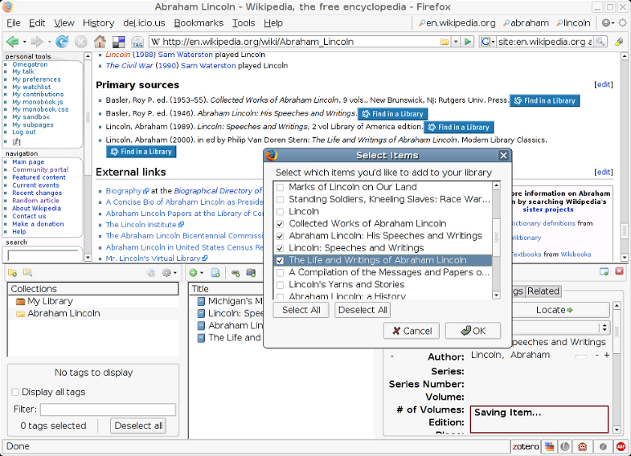

Zotero

Overview
Zotero is an open source tool used to store, cite, and share research material. Zotero can pull a variety of electronic sources and grab content from the web with a single click. Working with the tool, researchers can create a personal research archive, generate citation material, create collaborative bibliographic records online, and much more.
Documentation
Read the documentation for Zotero here.
Suggested Activities
Web research exercise
Ask students to collect, evaluate, and compare web-based resources using Zotero. Using the tool to pair citation with evaluation of content will help students build digital literacy to parse rich sources from content farms and the like.
A collaborative class reading list
Use Zotero Groups to build a collaborative class library with students. Transforming the work of amassing and citing sources into a social knowledge creation project invites students to build valuable clusters of sources, rather than focus primarily on formatting conventions.
back